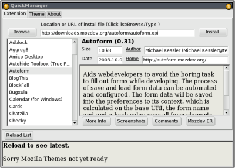
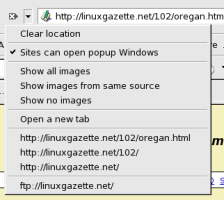

Getting a better browsing experience with Mozilla
OK, so the average browsing experience with Mozilla is pretty good to begin with, but Mozilla can be extended in several ways to get greater functionality. I'm only covering ways to improve browsing in this article; though there are many other extensions available, from games to web development tools. You can even get UI designers for developing your own Mozilla extensions.
Of course, many people will say that the best way to use Mozilla is to install FireFox, but I'm still a bit too comfortable in Mozilla to consider changing. In any event, using extensions such as the Tabbed Browsing Extensions add FireFox's abilities (and more) to Mozilla.
This article is intended to be the start of a series on desktop related topics; covering everything from GDesklets/Super Karamba (next month!) to running Windows applications under Wine (and comparing them to native replacements).
QuickManager
If you think that you'll be using a lot of extensions, QuickManager is the first extension you'll want to install. QuickManager uses the lists of available extensions from the Database project (a project to keep a unified record of all Mozilla extensions) to provide an easy way to install multiple extensions.
Of course, you could always go to MozDev and browse the lists of extensions, but not all extensions are hosted there. One in particular is the tabbrowser extensions, which I can no longer browse without.
Tabbrowser Extensions
This is the big one for me. The tabbrowser extensions add several great features to Mozilla's tabs. This does everything to remembering a configurable amount of previously closed tabs, to allowing you to rearrange tabs so that pages of similar topics can be kept together on your screen. It allows you to choose whether new tabs get focus (as Mozilla does) or not (the FireFox default) depending on how they are opened. You can choose on a per-tab basis whether or not to allow images, Java, Javascript or frames. You can also choose to save tab sessions, and if Mozilla crashes it will offer to restore the last set of tabs which were open.
One of the best features for me, however, is Auto Reload. This allows you to pick an interval between reloads. I use this to watch Wikipedia's recent changes to watch for vandalism, and delete it as it happens. (This seems to be a good time to include a plug). Though Mozilla has a function to watch a bookmarked page, and notify the user (by changing the icon or playing a sound) when the page changes, Wikipedia is updated every few seconds, so this feature isn't useful me.
The Googlebar
The googlebar comes next for me in terms of usefulness. Though Mozilla can be configured to perform searches using bookmarklets (covered later in this article), the Googlebar provides access to most, if not all, of Google's facilities from the browser window - it'd get pretty confusing to try to remember keywords for all of them.
Another great feature is that googlebar can remember your last n searches (up to 50), which are available from a drop-down menu.
Small extensions
NextImage
NextImage is possibly the simplest Mozilla extension going. NextImage finds the last number in the URL, and adds an option to the browser's context menu to either increments it or decrements it by one. Although even its' own author refers to it as "pretty dumb", this simple idea has saved me a lot of time around /usr/share/doc. This requires global installation (i.e. root needs to install it).
Diggler
Diggler is another small extension. It simply adds a button to clear the addressbar, similar to Konqueror's. This would be useful enough by itself, but Diggler also provides a drop-down menu which gives easy access to lower level directories, and an ftp url for the site. Diggler also requires global installation.
PopupAlt
Popup ALT does exactly what is says on the tin: it provides a popup of an image's ALT tag when the mouse is placed over it. This feature, which was present in Netscape 4, was removed from Mozilla for some unknown reason.
User Agent Switcher
User Agent Switcher is also a pretty descriptive title: it provides a submenu which allows you to masquerade Mozilla as another browser. This is useful for sites which block access to browsers other than Internet Explorer, despite rendering just as well in others.
Command line users: You can do the same with lynx:lynx -useragent="Mozilla/4.0 (compatible; MSIE 6.0; Windows NT 5.1)" [url]wget:wget -U "Mozilla/4.0 (compatible; MSIE 6.0; Windows NT 5.1)" [url]or curl:curl -A "Mozilla/4.0 (compatible; MSIE 6.0; Windows NT 5.1)" [url]
Bookmarklets
Another way of extending Mozilla's capabilities is by using bookmark keywords. Using the bookmark manager (Bookmarks->Manage bookmarks, or Ctrl-B) you can edit the properties of a bookmark, and insert a keyword. This allows you to use your own mnemonics to access frequently accessed URLs from the location bar.
Where this really comes in handy, though, is that you can replace any part of the URL with "%s", which will be replaced by whatever subsequent text you enter, with modifications to make a proper URL (spaces become '%20', etc). For example, if I have the URL "http://slashdot.org/search.pl?query=%s" bookmarked with the keyword "slash" (you can create a new bookmark from the bookmark manager from File->New->Bookmark), if I type "slash Alexis de Toqueville" Mozilla transforms the URL into http://slashdot.org/search.pl?query=Alexis%20de%20Toqueville
You can also use Javascript in Bookmarklets. Ben recently sent a few bookmarklets to The Answer Gang list which are useful for web development, allowing you to quickly resize the screen to various settings. If Ben was to create a new bookmark with "javascript:moveTo(0,20);window.resizeTo(1280,738)" as the URL and "fs" as the keyword, he would be able have his browser return to his preferred size. Knowing that Ben is pretty comfortable around a keyboard, I think he'd prefer that to having to reach for the mouse.
I've created a sample set of bookmarklets. This can be saved as a text file (though it's already available as sample-bookmarklets.html.txt), and can be imported into an existing set of bookmarks in the Bookmark Manager, from Tools->Import.
<!DOCTYPE NETSCAPE-Bookmark-file-1>
<DL><p>
<DT><H3>Some Bookmarklets</H3>
<DL><P>
<DT><A HREF="http://freshmeat.net/search/?q=%s" SHORTCUTURL="fm">Freshmeat Search</A>
<DT><A HREF="http://www.wikipedia.org/w/wiki.phtml?search=%s&go=Go" SHORTCUTURL="wiki">Search Wikipedia</A>
<DT><A HREF="http://imdb.com/Find?for=%s" SHORTCUTURL="imdb">IMDB Search</A>
<DT><A HREF="http://www.dict.org/bin/Dict?Form=Dict1&Query=%s&Strategy=*&Database=*"
SHORTCUTURL="dict">Dict Search</A>
<DT><A
HREF="http://www.google.com/search?q=%s&btnG=Google+Search&domains=linuxgazette.net&sitesearch=linuxgazette.net"
SHORTCUTURL="lg">Search Linux Gazette</A>
<DT><A HREF="http://slashdot.org/search.pl?query=%s" SHORTCUTURL="slash">Search Slashdot</A>
<DT><A HREF="http://www.google.com/linux?restrict=linux&q=%s" SHORTCUTURL="l">Google Linux Search</A>
<DT><A HREF="http://www.google.com/search?q=%s" SHORTCUTURL="g">Google Search</A>
<DT><A HREF="http://www.m-w.com/cgi-bin/dictionary?book=Dictionary&va=%s" SHORTCUTURL="mw">Merriam-Webster
Dictionary</A>
<!-- Ben's Window resizing bookmarklets -->
<DT><A HREF="javascript:window.resizeTo(640,480)" SHORTCUTURL="640">Resize to 640x480</A>
<DT><A HREF="javascript:window.resizeTo(800,600)" SHORTCUTURL="800">Resize to 800x600</A>
<DT><A HREF="javascript:window.resizeTo(1024,768)" SHORTCUTURL="1024">Resize to 1024x768</A>
</DL>
</DL>
Jimmy has been using computers from the tender age of seven, when his father
inherited an Amstrad PCW8256. After a few brief flirtations with an Atari ST
and numerous versions of DOS and Windows, Jimmy was introduced to Linux in 1998
and hasn't looked back.
In his spare time, Jimmy likes to play guitar and read: not at the same time,
but the picks make handy bookmarks.
![[BIO]](../gx/2004/authors/oregan.jpg) Jimmy is a single father of one, who enjoys long walks... Oh, right.
Jimmy is a single father of one, who enjoys long walks... Oh, right.